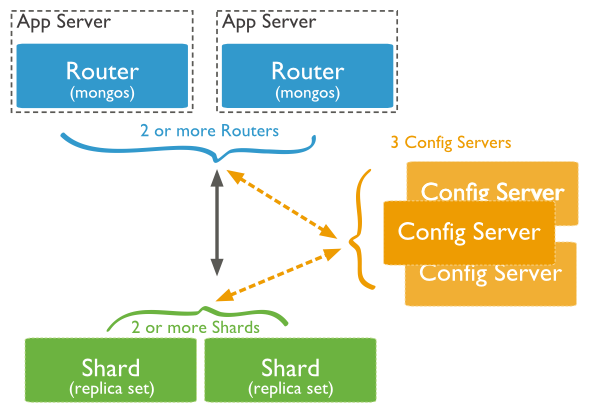

mongodb的分片
【MongoDB 分片集群技术】-https://www.cnblogs.com/clsn/p/8214345.html
【MongoDB 分片】-http://www.runoob.com/mongodb/mongodb-sharding.html
分片
在Mongodb里面存在另一种集群，就是分片技术,可以满足MongoDB数据量大量增长的需求。
当MongoDB存储海量的数据时，一台机器可能不足以存储数据，也可能不足以提供可接受的读写吞吐量。这时，我们就可以通过在多台机器上分割数据，使得数据库系统能存储和处理更多的数据。
为什么使用分片
复制所有的写入操作到主节点
延迟的敏感数据会在主节点查询
单个副本集限制在12个节点
当请求量巨大时会出现内存不足。
本地磁盘不足
垂直扩展价格昂贵
MongoDB分片
下图展示了在MongoDB中使用分片集群结构分布：

上图中主要有如下所述三个主要组件：
Shard: 用于存储实际的数据块，实际生产环境中一个shard server角色可由几台机器组个一个replica set承担，防止主机单点故障Config Server: mongod实例，存储了整个 ClusterMetadata，其中包括 chunk信息。Query Routers: 前端路由，客户端由此接入，且让整个集群看上去像单一数据库，前端应用可以透明使用。
分片实例
1. 步骤一：启动Shard Server
[root@100 /]# mkdir -p /www/mongoDB/shard/s0
[root@100 /]# mkdir -p /www/mongoDB/shard/s1
[root@100 /]# mkdir -p /www/mongoDB/shard/s2
[root@100 /]# mkdir -p /www/mongoDB/shard/s3
[root@100 /]# mkdir -p /www/mongoDB/shard/log
[root@100 /]# /usr/local/mongoDB/bin/mongod --port 27020 --dbpath=/www/mongoDB/shard/s0 --logpath=/www/mongoDB/shard/log/s0.log --logappend --fork
....
[root@100 /]# /usr/local/mongoDB/bin/mongod --port 27023 --dbpath=/www/mongoDB/shard/s3 --logpath=/www/mongoDB/shard/log/s3.log --logappend --fork
2. 步骤二： 启动Config Server
[root@100 /]# mkdir -p /www/mongoDB/shard/config
[root@100 /]# /usr/local/mongoDB/bin/mongod --port 27100 --dbpath=/www/mongoDB/shard/config --logpath=/www/mongoDB/shard/log/config.log --logappend --fork
注意：
这里我们完全可以像启动普通mongodb服务一样启动，不需要添加—shardsvr和configsvr参数。因为这两个参数的作用就是改变启动端口的，所以我们自行指定了端口就可以。
3. 步骤二： 启动Config Server
/usr/local/mongoDB/bin/mongos --port 40000 --configdb localhost:27100 --fork --logpath=/www/mongoDB/shard/log/route.log --chunkSize 500
mongos启动参数中，chunkSize这一项是用来指定chunk的大小的，单位是MB，默认大小为200MB.
4. 步骤四： 配置Sharding
接下来，我们使用MongoDB Shell登录到mongos，添加Shard节点
[root@100 shard]# /usr/local/mongoDB/bin/mongo admin --port 40000
MongoDB shell version: 2.0.7
connecting to: 127.0.0.1:40000/admin
mongos> db.runCommand({ addshard:"localhost:27020" })
{ "shardAdded" : "shard0000", "ok" : 1 }
......
mongos> db.runCommand({ addshard:"localhost:27029" })
{ "shardAdded" : "shard0009", "ok" : 1 }
mongos> db.runCommand({ enablesharding:"test" }) #设置分片存储的数据库
{ "ok" : 1 }
mongos> db.runCommand({ shardcollection: "test.log", key: { id:1,time:1}})
{ "collectionsharded" : "test.log", "ok" : 1 }
4. 步骤五：
程序代码内无需太大更改，直接按照连接普通的mongo数据库那样，将数据库连接接入接口40000